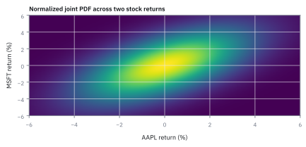
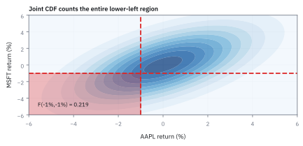

6.1 Row Vectors and Column Vectors
เขียนข้อมูลชุดเดียวกันเป็นแถวหรือคอลัมน์ให้ชัด
พอร์ต \$25 ล้าน ถือ AAPL 50%, JPM 30% และ short NVDA 20% วันนี้สามตัวขยับ +1.2%, −0.6%, +0.4% พอร์ตได้หรือเสียกี่ดอลลาร์ และถ้าโค้ดวางตัวเลขผิดด้านจะได้อะไรออกมา?
เฉลย: ได้ \$85,000 หรือ 0.34% เมื่อวางน้ำหนักเป็นแถวนอนแล้วคูณกับผลตอบแทนที่เป็นคอลัมน์ ถ้าสลับด้านจะได้ตาราง 3×3 เก้าช่อง ไม่ใช่ P&L ตัวเดียว
Row vector และ column vector คือรายการตัวเลขแนวนอนหรือแนวตั้ง ตัวเลขไม่เปลี่ยนตัวตนเมื่อพลิก แต่เปลี่ยนมือที่จับมัน; งาน quant ใช้จัด input, weight และ output ของ allocation ให้คูณกันถูกด้าน
เริ่มจากพอร์ตสามตัวที่ต้องรายงานเป็นดอลลาร์วันนี้
พอร์ต \$25 ล้าน ถือ AAPL 50% ถือ JPM 30% และ short NVDA 20% วันนี้สามตัวขยับ +1.2% −0.6% และ +0.4% ต้องรายงานว่าพอร์ตได้หรือเสียกี่ดอลลาร์
ด้วยมือก็ทำได้ คูณทีละตัวแล้วบวก แต่พอร์ตจริงมีหุ้นเป็นพันตัวและต้องคิดใหม่ทุกนาที งานจึงต้องส่งให้เครื่อง และเครื่องต้องการให้เราบอกด้วยว่าตัวเลขชุดไหนเรียงแนวไหน
ตรงนี้คือจุดที่พลาดกันบ่อย ถ้าวางน้ำหนักกับผลตอบแทนผิดด้าน เครื่องจะไม่ฟ้อง มันจะคืนตาราง 3×3 เก้าช่องมาให้แทนที่จะเป็นกำไรตัวเดียว หัวข้อนี้คือกติกาว่าด้านไหนคือด้านถูก และทำไม
ศัพท์ที่ใช้ในหัวข้อนี้
- net asset value (NAV)
- มูลค่าทรัพย์สินของ portfolio หลังหักหนี้ ใช้แปลงสัดส่วนน้ำหนักให้เป็นจำนวน USD ที่ต้องซื้อขายหรือรับความเสี่ยง
- vector
- รายการตัวเลขที่ถือเป็นวัตถุเดียว เช่นผลตอบแทนของหุ้นหลายตัวในวันเดียว ใช้เก็บ exposure หลายมิติไว้ให้คำนวณพร้อมกันแทนการไล่ทีละหุ้น
- matrix
- ตารางตัวเลขที่มีทั้งแถวและคอลัมน์ ใช้แทนการแปลง exposure หลายตัวพร้อมกัน; ต่างจาก scalar P&L หนึ่งค่า เพราะมิติของผลลัพธ์ยังมีความหมาย
- row vector
- vector ที่เขียนแนวนอนหนึ่งแถว ใช้แทนน้ำหนัก portfolio เพื่อคูณกับ column vector ของผลตอบแทนแล้วได้ scalar P&L หนึ่งค่า
- column vector
- vector ที่เขียนแนวตั้งหนึ่งคอลัมน์ ใช้แทนข้อมูลที่ถูกป้อนเข้าระบบ เช่นผลตอบแทนรายตัว เพื่อให้มิติรับกับ row vector ของน้ำหนัก
- portfolio weight
- สัดส่วนมูลค่าเงินทุนที่จัดให้สินทรัพย์หนึ่งตัว โดยค่าบวกคือ long และค่าลบคือ short ใช้แปลงผลตอบแทนรายตัวเป็นผลกระทบต่อ portfolio ทั้งก้อน
- long
- position ที่ได้กำไรเมื่อราคาสินทรัพย์ขึ้น ใช้รับ exposure ขาขึ้นของหุ้นหรือ index
- short
- position ที่ได้กำไรเมื่อราคาสินทรัพย์ลงและขาดทุนเมื่อราคาขึ้น ใช้ลดหรือกลับทิศ exposure ที่ portfolio ไม่ต้องการ
- exposure
- ขนาดและทิศทางที่ portfolio จะตอบสนองต่อการเคลื่อนไหวของสินทรัพย์ ใช้บอกว่าเงินจริงกำลังเสี่ยงกับอะไร ไม่ใช่แค่บอกจำนวนหุ้นที่ถือ
- hedge
- position ที่ตั้งใจให้กำไรหรือขาดทุนสวนกับความเสี่ยงอีกก้อน ใช้ลด exposure ที่ portfolio ไม่ต้องการ โดยต้องตรวจทั้งขนาด ทิศทาง และต้นทุนก่อนส่งคำสั่ง
- United States (US) equity
- หุ้นที่จดทะเบียนและซื้อขายในตลาดสหรัฐฯ ใช้ระบุขอบเขตตลาดของ portfolio ก่อนเลือก ticker, เวลาอ้างอิง และสกุลเงินให้ตรงกัน
- leverage
-
คืออะไร: การถือ exposure รวม (gross) มากกว่าเงินทุนที่มีจริง เช่น NAV 25 ล้านแต่ถือ long กับ short รวม 40 ล้าน
ใช้ทำอะไร: ขยายทั้งกำไรและขาดทุนต่อหนึ่งดอลลาร์ของเงินทุน
ทำไมต้องวัดด้วย gross: เพราะ net ที่ใกล้ศูนย์ซ่อนขนาดเงินที่กำลังเสี่ยงจริง
- transpose
- การพลิก column vector เป็น row vector หรือกลับกัน เขียนด้วยเครื่องหมาย ⊤ ต่อท้าย ใช้จัดรูปให้คูณกันได้ตามกฎมิติ
- rebalance
- การซื้อขายเพื่อดึงน้ำหนักที่ลอยไปตามราคากลับมาที่เป้า ใช้คุมให้พอร์ตยังเป็นพอร์ตที่ตั้งใจไว้
- basis point (bp)
- หนึ่งในหมื่น หรือ 0.01% ใช้วัดส่วนต่างเล็ก ๆ ของน้ำหนักผลตอบแทน และต้นทุน
สัญลักษณ์ที่ใช้ในหัวข้อนี้
| สัญลักษณ์ | ความหมาย | หน่วย |
|---|---|---|
| $N$ | มูลค่า portfolio ก่อนตลาดขยับ | USD |
| $w_i$ | portfolio weight ของสินทรัพย์ตัวที่ $i$; บวกคือ long ลบคือ short | ไม่มีหน่วย |
| $\mathbf{w}$ | vector ของ portfolio weights | ไม่มีหน่วย |
| $r_i$ | return รายวันของสินทรัพย์ตัวที่ $i$ | decimal ต่อวัน |
| $\mathbf{r}$ | column vector ของผลตอบแทนรายวันทั้งหมด | decimal ต่อวัน |
| $\Delta V$ | การเปลี่ยนแปลงมูลค่า portfolio จากผลตอบแทนหนึ่งวัน | USD |
| $\mathbf{p}$ | column vector ของราคาต่อหุ้น | USD ต่อหุ้น |
| $\mathbf{n}$ | column vector ของจำนวนหุ้นที่ถือ | หุ้น |
| $\Delta\mathbf{n}$ | จำนวนหุ้นที่ต้องซื้อ (บวก) หรือขาย (ลบ) ตอน rebalance | หุ้น |
แล้วเอาไปใช้ทำอะไรได้จริงบ้าง
การจัดข้อมูลเป็นแถวหรือคอลัมน์ให้ถูก ทำให้คำนวณพอร์ตทั้งกองได้ในบรรทัดเดียว
ใช้คำนวณผลตอบแทนของพอร์ตที่มีสินทรัพย์เป็นร้อยตัว โดยไม่ต้องเขียนลูปทีละตัว ซึ่งเป็นวิธีที่ระบบจริงใช้เพราะเร็วกว่ามาก
ใช้อ่านตัวเลขความเสี่ยงสองตัวที่โต๊ะดูทุกวัน คือเอียงไปทางไหนสุทธิ และใช้เงินไปทั้งหมดเท่าไร ซึ่งสองตัวนี้ต่างกันมากในพอร์ตที่มีทั้งซื้อและขายยืม
ใช้เป็นภาษากลางกับโค้ด เพราะรูปแถวและคอลัมน์นี้ตรงกับที่ไลบรารีคำนวณทุกตัวคาดหวัง
Figure 6.1a — แถวคูณคอลัมน์ ทีละส่วนร่วม

แต่ละแท่งคือน้ำหนักคูณผลตอบแทนของสินทรัพย์หนึ่งตัว +0.60%, −0.18% และ −0.08% ต่อกันแบบขั้นบันได แล้วได้ผลตอบแทนพอร์ต +0.34% ซึ่งคือผลคูณแถวของน้ำหนักกับหลักของผลตอบแทนที่คำนวณไว้ในหน้านี้
ตั้งข้อมูลให้เครื่องคิดเลขอ่านได้
เรียง ticker ให้คงที่เป็นหุ้น Apple (AAPL), JPMorgan Chase (JPM) และ Nvidia (NVDA) ทั้งสอง vector ห้ามสลับลำดับกลางทาง เพราะน้ำหนักของ AAPL ที่ไปจับผลตอบแทนของ NVDA คือความผิดพลาดแบบเงียบที่สุดของ portfolio code
ขั้นที่ 1 — ของที่โจทย์ให้: เขียนน้ำหนักเป็น row vector
ตัวเลขสามตัวนี้คือ ของที่โจทย์ให้ ไม่ได้คำนวณมาจากอะไร การจัดสรรพอร์ตเขียนเป็นแถวนอน เพราะจะเอาไปคูณกับข้อมูลที่เรียงเป็นคอลัมน์ในขั้นถัดไป
$\mathbf{w}_{\mathrm{row}}$ คือ row vector ของ portfolio weights ตามลำดับ AAPL, JPM, NVDA ค่า 0.50 และ 0.30 คือ long 50% และ 30% ส่วน -0.20 คือ short 20% เครื่องหมายและลำดับนี้ใช้กำหนดทิศของ contribution ต่อ P&L
ขั้นที่ 2 — เขียนผลตอบแทนเป็น column vector
ผลตอบแทนเขียนเป็นคอลัมน์ตั้ง การจับคู่แถวกับคอลัมน์แบบนี้คือกติกาที่ทำให้คูณกันได้
$\mathbf{r}_{\mathrm{col}}$ คือผลตอบแทนรายวันของ AAPL, JPM, NVDA ตามลำดับเดียวกับ weights: 1.2%, -0.6%, และ 0.4% เขียนแนวตั้งเพื่อให้แต่ละน้ำหนักจับคู่กับผลตอบแทนหนึ่งตัวพอดี
ขั้นที่ 3 — พิสูจน์ที่มา: ประกอบ portfolio return จากกำไรขาดทุนระดับดอลลาร์
สูตร $r_p=\mathbf{w}_{\mathrm{row}}\mathbf{r}_{\mathrm{col}}$ ไม่ใช่กฎที่ตั้งขึ้นมาลอย ๆ แต่เกิดจากการรวมเงินกำไรขาดทุนจริงของสินทรัพย์แต่ละตัวแล้วหารกลับด้วยเงินทุนตั้งต้น $N$ การคูณแถวด้วยคอลัมน์จึงเป็นเพียงเครื่องมือทางพีชคณิตที่ทำงานตรงกับความหมายทางเศรษฐศาสตร์พอดี
จุดเริ่มต้นไม่ได้มาจากการคิดค้นสูตรใหม่ แต่เริ่มจากบัญชีกำไรขาดทุนจริง เงินลงทุนในสินทรัพย์ตัวที่ $i$ คือ $w_i N$ เมื่อราคาเปลี่ยนไปตามอัตราผลตอบแทน $r_i$ กำไรขาดทุนเป็นเงินดอลลาร์คือผลคูณระหว่างเงินตั้งต้นกับผลตอบแทน
กำไรขาดทุนรวมของทั้งพอร์ตคือผลรวมของกำไรขาดทุนย่อยแต่ละตัว เมื่อดึงมูลค่าพอร์ต $N$ ที่เป็นตัวคูณร่วมออกมาข้างนอก จะได้ก้อนผลรวมของน้ำหนักคูณผลตอบแทน
ผลตอบแทนของพอร์ต $r_p$ นิยามจากกำไรขาดทุนรวมหารด้วยเงินตั้งต้น ตัวแปร $N$ จึงตัดกันหมด เหลือเพียงผลรวมถ่วงน้ำหนัก ซึ่งตรงกับนิยามการคูณ row vector ด้วย column vector ในพีชคณิตเชิงเส้นพอดี
ขั้นที่ 4 — คูณให้เหลือ portfolio return หนึ่งค่า
คูณแถวกับคอลัมน์ได้ตัวเลขเดียว ซึ่งก็คือผลตอบแทนของทั้งพอร์ต สังเกตว่านี่คือการคูณแล้วบวกที่ทำด้วยมือได้อยู่แล้ว แค่เขียนสั้นลง
ทำไมจับคู่ตำแหน่งต่อตำแหน่ง: น้ำหนักของ AAPL ต้องเจอกับผลตอบแทนของ AAPL เท่านั้น ช่องที่หนึ่งคูณช่องที่หนึ่ง ช่องที่สองคูณช่องที่สอง แล้วรวม นี่คือกติกาเดียวของการคูณแถวกับคอลัมน์
สามผลคูณคือ contribution ของแต่ละหุ้น: AAPL ให้ +0.60%, JPM ให้ −0.18%, NVDA ที่ short ไว้และขึ้น 0.4% ทำให้เสีย −0.08% รวม 0.34% ต่อวัน ยังไม่ใช่ USD จนกว่าจะคูณมูลค่าพอร์ต
ขั้นที่ 5 — แปลงผลตอบแทนเป็น P&L
ผลตอบแทนเป็นสัดส่วน ต้องคูณด้วยขนาดพอร์ตถึงจะเป็นเงินที่เข้ากระเป๋าจริง
$N=\$25{,}000{,}000$ คือมูลค่า portfolio ก่อนตลาดปิด และ $r_p=0.0034$ คือผลตอบแทนที่คำนวณได้จากขั้นที่ 4 ผลคูณคือ $\Delta V=\$85{,}000$ ซึ่งเป็น P&L ของวันนั้น ใช้ตอบคำถามของ risk manager เป็นจำนวนเงินจริง
ตรวจสอบระดับดอลลาร์: รวมกำไรขาดทุนแยกรายสินทรัพย์
การตรวจทานตัวเลขระดับดอลลาร์ช่วยยืนยันว่าการคำนวณด้วย vector ให้ผลลัพธ์ตรงกับการทำบัญชีรายตัวจริง และแสดงให้เห็นว่าการ short หุ้นที่ราคาขึ้นจะสร้างผลขาดทุนเป็นเม็ดเงินจริงออกมาหักกลบกำไรส่วนอื่น
เมื่อนำตัวเลขจริงของพอร์ตมาแจกแจงรายตัว หุ้น AAPL มีเงินลงทุน \$12.5 ล้าน ได้กำไร \$150,000 หุ้น JPM มีเงินลงทุน \$7.5 ล้าน ขาดทุน \$45,000 และหุ้น NVDA ซึ่ง short ไว้ \$5 ล้าน ขาดทุน \$20,000 เพราะราคาหุ้นปรับตัวขึ้นสวนทางกับสถานะ
เมื่อรวมเงินกำไรขาดทุนทั้งสามตัว จะได้เงินจริง \$85,000 พอดี และเมื่อเทียบสัดส่วนกับเงินทุน \$25 ล้าน จะได้ผลตอบแทน 0.0034 เท่ากับการคูณ vector ในขั้นก่อนหน้าทุกประการ
Figure 6.1b — exposure เป็นดอลลาร์คือน้ำหนักคูณเงินทุน

AAPL long \$12.5 ล้าน, JPM long \$7.5 ล้าน และ NVDA short \$5.0 ล้าน; เครื่องหมายบวกและลบบอก hedge ก่อนที่ตลาดจะเริ่มตัดเกรดเรา
เช็ก net exposure ก่อนส่ง order
ผลรวมน้ำหนักเท่ากับ 60% จึงมี net long exposure \$15 ล้าน แต่ผลรวมค่าสัมบูรณ์เท่ากับ 100% จึงมี gross exposure \$25 ล้าน ทั้งสองเลขจำเป็น: net บอกทิศตลาดรวม ส่วน gross บอกเงินที่กำลังทำงานจริง
คำถาม: net 60% กับ gross 100% บน NAV \$25 ล้าน ต่างกันกี่ USD และบอกอะไรคนละอย่าง?
ของที่มี: NAV \$25 ล้าน, ผลรวม weights 60%, ผลรวม absolute weights 100%
1 คูณ \$25 ล้าน ด้วย 60% ได้ net long exposure \$15 ล้าน.
2 คูณ \$25 ล้าน ด้วย 100% ได้ gross exposure \$25 ล้าน.
เฉลย: book เอียงขึ้นสุทธิ \$15 ล้าน แต่มีเงินทำงานรวม \$25 ล้าน.
เช็ก 10 วินาที: 0.60 × 25 = 15 และ 1.00 × 25 = 25
งานจริง: ใช้ net กำหนด market direction และใช้ gross คุม leverage กับ turnover risk
กับดัก: อย่าดู net ใกล้ศูนย์แล้วเรียก book ว่าเสี่ยงน้อย; long กับ short ก้อนใหญ่หักกันบนกระดาษได้แต่ยังมี gross risk
ขั้นที่ 6 — Net and gross exposure
ตัวเลขสองตัวที่โต๊ะดูทุกวัน ตัวหนึ่งบอกว่าเอียงไปทางไหน อีกตัวบอกว่าใช้เงินไปเท่าไร พอร์ตที่เอียงเป็นศูนย์ยังใช้เงินได้มหาศาล
$\sum_i w_i$ รวมน้ำหนักพร้อมเครื่องหมาย จึงได้ net exposure 0.60 หรือ 60% ส่วน $\sum_i|w_i|$ รวมขนาดโดยไม่สนเครื่องหมาย จึงได้ gross exposure 1.00 หรือ 100% สองค่านี้ใช้แยก portfolio ที่เอียงตามตลาดออกจาก portfolio ที่มีคู่ long-short มากแต่ net ต่ำ
Figure 6.1c — net กับ gross ตอบคำถามความเสี่ยงคนละข้อ

net exposure เก็บเครื่องหมายไว้ ส่วน gross exposure นับขนาดทุกด้าน; portfolio อาจดูเบาบน net แต่ยังถือ gross book ใหญ่พอจะทำให้ risk manager หยุดกาแฟได้
มิติของการคูณ: Inner Product เทียบกับ Outer Product
กฎมิติของ matrix multiplication กำหนดว่ามิติด้านในต้องเท่ากัน หากนำ column vector มาคูณ column vector ขนาด $3\times 1$ กับ $3\times 1$ ระบบจะไม่สามารถคำนวณได้ เพราะมิติด้านในไม่ตรงกัน การคุม orientation ของ vector จึงเป็นเงื่อนไขชี้เป็นชี้ตายของการเขียนโปรแกรม
การเรียงลำดับมีผลต่อชนิดของผลลัพธ์อย่างสิ้นเชิง เมื่อนำ row vector ขนาด $1\times 3$ มาคูณ column vector ขนาด $3\times 1$ มิติด้านในตรงกันและมิติด้านนอกคือ $1\times 1$ จึงยุบเป็นตัวเลขตัวเดียวที่เรียกว่า inner product
แต่หากสลับเอา column vector มาไว้ข้างหน้า มิติจะเป็น $3\times 1$ คูณกับ $1\times 3$ ผลลัพธ์จะกลายเป็น matrix ขนาด $3\times 3$ ที่เรียกว่า outer product ซึ่งมี rank เท่ากับ 1 ไม่ใช่ตัวเลขผลตอบแทนที่พอร์ตต้องการ
ขั้นที่ 7 — พอร์ตเดียว vector สามตัว: weight ราคา และจำนวนหุ้น
ตัวอย่างที่สองจากต้นทาง: กองทุนหุ้น 4 ตัว NAV \$10 ล้าน ผู้จัดการกำหนดน้ำหนักมาแล้ว ตลาดบอกราคา แต่ระบบส่งคำสั่งรับแค่จำนวนหุ้น ต้องแปลงอย่างไร?
vector สามตัวเป็นของสามคนน้ำหนักเป็นของผู้จัดการกองทุนที่ตัดสินใจ ราคาเป็นของตลาดที่ขยับทุกวินาที จำนวนหุ้นเป็นของห้องเทรดที่ส่งคำสั่งได้จริง ทั้งสามตัวเรียงหุ้นลำดับเดียวกัน ตำแหน่งที่ 3 ของทุกตัวต้องหมายถึงหุ้นตัวเดียวกันเสมอ
ผลรวมน้ำหนักเท่ากับ 1 แปลว่าลงเงินครบ ไม่มีเงินสดเหลือและไม่มีการกู้ ทุกตัวเป็นบวกจึงไม่มี short ถ้ารวมได้ 0.95 คือถือเงินสด 5% ถ้าได้ 1.30 คือกู้มา 30% ตัวเลขบรรทัดเดียวนี้บอกโครงสร้างทั้งพอร์ต
ขั้นที่ 8 — แปลงน้ำหนักเป็นจำนวนหุ้นทีละตัว
คิดทีละหุ้นสองจังหวะ เงินที่จะใส่หุ้นตัวนั้นคือน้ำหนักคูณ NAV แล้วหารด้วยราคาได้จำนวนหุ้น
เลข 24,648 ไม่ได้ลอยมา มันคือ 0.35 คูณ 10 ล้าน ได้ \$3.5 ล้าน แล้วหารด้วย 142 ทุกช่องใช้การหารแบบเดียวกัน
การหารนี้ทำทีละช่อง พีชคณิตเชิงเส้นไม่มีการหาร vector ด้วย vector จึงต้องกางออกทีละบรรทัด และคำสั่งของกองทุนส่งเป็นหุ้นเต็ม จึงต้องปัดเป็นจำนวนเต็ม การปัดนี้เองที่ทำให้ขั้นต่อไปไม่ลงตัว
ขั้นที่ 9 — มูลค่าพอร์ตจริงคือราคาแถวคูณจำนวนหุ้นคอลัมน์
มูลค่าพอร์ตคือราคาคูณจำนวนหุ้นทีละตัวแล้วบวก ซึ่งคือการคูณแถวกับคอลัมน์แบบขั้นที่ 4 เพียงแต่คราวนี้ได้เงิน ไม่ใช่ผลตอบแทน
ตรวจมิติก่อนคูณ $\mathbf{p}^{\top}$ ขนาด 1×4 คูณ $\mathbf{n}$ ขนาด 4×1 ตัวในเท่ากันคือ 4 ตัวนอกคือ 1×1 จึงได้ตัวเลขเดียว หน่วย USD ต่อหุ้นคูณหุ้นได้ USD พอดี ถ้าเผลอคูณน้ำหนักกับจำนวนหุ้น เครื่องคิดเลขก็ยังตอบ 25,238.55 แต่หน่วยเป็นหุ้นถ่วงด้วยสัดส่วน ซึ่งไม่มีความหมาย การไล่หน่วยจับผิดได้ก่อนไล่ตัวเลข
ได้ \$10,000,005 เกินเป้า \$5 และมาจากการปัดล้วน ๆ หุ้นตัวแรกปัด 24,647.89 ขึ้นเป็น 24,648 เกินมา 0.11 หุ้น คูณ 142 ได้ราว \$16 ครบสี่ตัวรวมกันได้ +5 พอดี กองทุนจริงจึงต้องมีบัญชีเงินสดคอยรับเศษ
weight ที่ได้จริงคือมูลค่าแต่ละตัวหารด้วยมูลค่ารวม ห่างจากเป้ามากสุด 0.0000031 หรือ 0.03 basis point ต้นทางเขียนว่า 0.3 bp ซึ่งเลื่อนทศนิยมผิดหนึ่งตำแหน่ง
ที่นี่ส่วนต่างเล็กมาก แต่ถ้าหุ้นราคา \$5,000 ในพอร์ตเล็ก ส่วนต่างจะโตเป็นหลายสิบ bp ทันที รายงานผลงานต้องใช้น้ำหนักที่ได้จริง ไม่ใช่น้ำหนักที่ขอ
ขั้นที่ 10 — rebalance ไปน้ำหนักเท่ากัน: ลบจำนวนหุ้นทีละช่อง
ผู้จัดการเปลี่ยนใจเป็นน้ำหนักเท่ากัน 0.25 ทุกตัว ต้องซื้อขายตัวละกี่หุ้น และเงินที่ต้องเทรดทั้งหมดเท่าไร?
เงินตัวละ \$2,500,000 หารด้วยราคาได้จำนวนหุ้นใหม่ แล้วลบจำนวนเดิมทีละช่องได้ $\Delta\mathbf{n}$ ค่าลบคือขาย ค่าบวกคือซื้อ หุ้นตัวที่ 2 ไม่ต้องแตะเลย เพราะน้ำหนักเดิมของมันคือ 0.25 อยู่แล้ว $\Delta\mathbf{n}$ วัดส่วนต่าง ไม่ได้วัดขนาด
เงินที่ต้องเทรดคือขนาดของแต่ละช่องคูณราคาแล้วบวก ได้ \$2,999,974 หรือ 30.0% ของ NAV หัวข้อ 6.4 ใช้ผลรวมแบบนี้ประมาณต้นทุนการเทรด ฝั่งขายรวม 1,499,959 ฝั่งซื้อรวม 1,500,015 ต่างกันแค่ \$56 จากเศษปัด เงินเข้าออกเกือบสมดุลอย่างที่ควรเป็น
ห้ามบวกช่องของ $\Delta\mathbf{n}$ ตรง ๆ −7,042 + 0 − 2,439 + 45,455 = 35,974 ไม่มีความหมาย เพราะเอาหุ้นราคา 142 ไปบวกกับหุ้นราคา 33 เหมือนเป็นของอย่างเดียวกัน ต้องคูณราคาให้เป็น USD ก่อนเสมอ
คำตอบ — จากน้ำหนักเป็นคำสั่งซื้อ แล้ว rebalance
คำถาม: NAV \$10 ล้าน weight 0.35, 0.25, 0.30, 0.10 ราคา 142, 68, 205, \$33 ต้องซื้อตัวละกี่หุ้น มูลค่าพอร์ตจริงเท่าไร และถ้าเปลี่ยนเป็นน้ำหนักเท่ากันต้องเทรดเท่าไร?
ของที่มี: ขั้นที่ 7 ถึง 10
1 จำนวนหุ้น 24,648, 36,765, 14,634 และ 30,303 จากเงินแต่ละก้อนหารราคาแล้วปัด
2 มูลค่าจริง \$10,000,005 เกิน \$5 เพราะการปัดน้ำหนักจริงห่างเป้าไม่เกิน 0.03 bp
3 ไปน้ำหนักเท่ากัน ขาย 7,042 และ 2,439 หุ้น ซื้อ 45,455 หุ้น ตัวที่ 2 ไม่แตะ เงินที่ต้องเทรด \$2,999,974 หรือ 30.0% ของ NAV
ตรวจเองใน 10 วินาที: 0.35 × 10,000,000 ÷ 142 ≈ 24,648 และส่วนเกินจากการปัด +16 +20 −30 −1 = +5
แปลว่าอะไร: สองสูตรนี้ทำงานทุกครั้งที่มีคนกดปุ่ม rebalance คือแปลงน้ำหนักเป็นจำนวนหุ้นด้วยการหารทีละช่อง และรวมมูลค่ากลับด้วยแถวคูณคอลัมน์น้ำหนักจะลอยไปเองทุกวันแม้ไม่มีใครเทรด เพราะราคาขยับ งาน rebalance จึงไม่มีวันจบ
โค้ดตรวจ P&L \$85,000 และการแปลงน้ำหนักเป็นจำนวนหุ้น
import numpy as np
w_row = np.array([[0.50, 0.30, -0.20]]) # 1x3
r_col = np.array([[0.012], [-0.006], [0.004]]) # 3x1
rp = (w_row @ r_col).item()
assert abs(rp - 0.0034) < 1e-12
assert abs(25_000_000 * rp - 85_000) < 1e-6
assert (r_col @ w_row).shape == (3, 3) # the wrong order gives a 3x3 table
assert abs(w_row.sum() - 0.60) < 1e-12 and abs(np.abs(w_row).sum() - 1.00) < 1e-12
N = 10_000_000
w = np.array([0.35, 0.25, 0.30, 0.10])
p = np.array([142, 68, 205, 33])
assert abs(w.sum() - 1) < 1e-12
n = np.round(w * N / p).astype(int)
assert n.tolist() == [24648, 36765, 14634, 30303]
value = p @ n
assert value == 10_000_005
assert (p * n - w * N).tolist() == [16, 20, -30, -1]
real = p * n / value
assert np.abs(real - w).max() < 3.2e-6 # 0.03 bp, not 0.3 bp
assert abs(w @ n - 25_238.55) < 1e-6 # computable, but the unit is meaningless
n_new = np.round(0.25 * N / p).astype(int)
dn = n_new - n
assert n_new.tolist() == [17606, 36765, 12195, 75758]
assert dn.tolist() == [-7042, 0, -2439, 45455]
traded = np.abs(dn) @ p
assert traded == 2_999_974 and abs(traded / N - 0.30) < 1e-5
assert -(dn[dn < 0] * p[dn < 0]).sum() == 1_499_959 and (dn[dn > 0] * p[dn > 0]).sum() == 1_500_015
assert dn.sum() == 35_974 # a sum of mixed shares: no meaningโค้ดคูณแถวกับคอลัมน์ให้ได้ 0.34% และ \$85,000 แล้วเดินตัวอย่างที่สองครบ: จำนวนหุ้นจากการหารทีละช่อง มูลค่าจริง \$10,000,005 ส่วนต่าง weight 0.03 bp และการ rebalance ที่เทรด \$2,999,974
กับดัก: column คูณ column ไม่ได้ให้ P&L
ถ้าเขียนทั้งน้ำหนักและผลตอบแทนเป็น column vector แล้วคูณตรง ๆ มิติภายในไม่ตรง จึงไม่มี scalar ออกมา ภาษา Python อาจ broadcast array แล้วคืนตารางที่ดูมีตัวเลขครบ แต่ไม่มีความหมายทางการเงิน กฎง่าย ๆ: ตรวจ shape และ ticker order ก่อนเชื่อผลลัพธ์
ที่มาที่ไป: ทำไมต้องแยกว่าอะไรเป็นแถวอะไรเป็นคอลัมน์
เรื่องนี้ดูเหมือนพิธีรีตองที่ไม่จำเป็น จนกระทั่งพอร์ตมีสินทรัพย์เกินสิบตัว
ก่อนมีสัญกรณ์แบบนี้ การเขียนสูตรของพอร์ตต้องเขียนผลบวกยาวเหยียดพร้อมดัชนีกำกับทุกตัว ซึ่งอ่านยาก เขียนผิดง่าย และตรวจแทบไม่ได้
การจัดข้อมูลเป็นแถวกับคอลัมน์ทำให้ผลบวกยาว ๆ นั้นยุบเหลือการคูณครั้งเดียว และที่สำคัญกว่านั้นคือมันทำให้ *รูปร่าง* ของข้อมูลกลายเป็นเครื่องตรวจความถูกต้องในตัวเอง ถ้ารูปร่างไม่เข้ากัน แปลว่าเขียนสูตรผิด โดยที่ยังไม่ต้องแทนตัวเลขเลย
เหตุผลข้อหลังนี้เองที่ทำให้ทุกไลบรารีคำนวณสมัยใหม่ใช้สัญกรณ์นี้เป็นภาษาหลัก
ประวัติความเป็นมา: จากพีชคณิตของเคย์ลีย์สู่พอร์ตสมัยใหม่
สัญกรณ์ matrix และการคูณแถวด้วยคอลัมน์ไม่ได้เกิดขึ้นเองตามธรรมชาติ แต่กำเนิดจากงานวิจัยของ Arthur Cayley ในราว ๆ ปี ค.ศ. 1858 เรื่อง A Memoir on the Theory of Matrices ร่วมกับ James Joseph Sylvester ผู้ตั้งคำว่า matrix ก่อนหน้านั้น นักคณิตศาสตร์ต้องเขียนระบบสมการเชิงเส้นแจกแจงทีละบรรทัดด้วยตัวแปรจำนวนมาก เช่น $x_1, x_2, \dots, x_d$ เมื่อต้องแทนตัวแปรจากระบบหนึ่งลงในอีกระบบหนึ่ง สมการจะซับซ้อนจนตรวจสอบความถูกต้องแทบไม่ได้
Cayley จึงเสนอให้นำตัวเลขมาจัดเป็นตารางสี่เหลี่ยม และนิยามการคูณแถวด้วยคอลัมน์ เพื่อแทนการซ้อนทับกันของการแปลงเชิงเส้น (linear transformation) ให้ยุบเหลือเพียงการคูณก้อนข้อมูลระดับ matrix เพียงครั้งเดียว ทำให้ตรวจสอบมิติของข้อมูลก่อนคำนวณได้ทันที
ในเวลาต่อมา ราว ๆ ปี ค.ศ. 1952 Harry Markowitz ได้นำสัญกรณ์ vector และ matrix เข้ามาปฏิวัติวงการการเงินในทฤษฎี Portfolio Selection จากเดิมที่ต้องทำบัญชีกำไรขาดทุนแยกรายหุ้นทีละตัว การมองสัดส่วนการลงทุนเป็น vector แถว $\mathbf{w}$ และผลตอบแทนเป็น vector คอลัมน์ $\mathbf{r}$ ทำให้การคำนวณผลตอบแทนรวม ความเสี่ยง และการกระจายการลงทุนของพอร์ตขนาดใหญ่ ยุบลงเหลือสมการกระชับบรรทัดเดียว
ข้อจำกัด: วิธีนี้สมมติอะไร และของจริงเป็นอย่างไร
| เรื่อง | วิธีนี้สมมติว่า | ของจริงเป็นอย่างไร | ผลที่ตามมาเวลาใช้งาน |
|---|---|---|---|
| ทิศของข้อมูล | รู้ว่าตัวไหนเป็นแถวตัวไหนเป็นคอลัมน์ | สลับกันได้ง่ายมากเวลาเขียนโค้ด | ผลลัพธ์ที่ได้อาจเป็นตัวเลขเดียวหรือเป็นตารางใหญ่ ต่างกันคนละเรื่อง |
| หน่วย | ทุกตัวใช้หน่วยเดียวกัน | บางตัวเป็นเปอร์เซ็นต์ บางตัวเป็นเงิน | การคูณข้ามหน่วยให้คำตอบที่ดูสมเหตุสมผลแต่ผิด |
| การจับคู่ | ลำดับของสินทรัพย์ตรงกันทั้งสองฝั่ง | ข้อมูลจากคนละแหล่งเรียงคนละลำดับ | เป็นข้อผิดพลาดที่หายากที่สุด เพราะโปรแกรมไม่ฟ้อง |
แถวล่างคือเหตุผลที่ระบบจริงใช้ชื่อสินทรัพย์เป็นดัชนี ไม่ใช่ตำแหน่งตัวเลข
สรุปที่ใช้ได้จริง
- row vector ของน้ำหนักคูณ column vector ของผลตอบแทนให้ portfolio return หนึ่งค่า; orientation คือส่วนหนึ่งของความหมาย ไม่ใช่การจัดหน้า
- portfolio weight บวกคือ long และลบคือ short; คูณด้วย $N$ แล้วได้ dollar exposure ที่ใช้คุมความเสี่ยงจริง
- net exposure เก็บเครื่องหมายเพื่อบอกทิศตลาดรวม ส่วน gross exposure วัดเงินที่ถูกนำไปเสี่ยงทั้งหมด
- ก่อนคำนวณ P&L ให้ล็อก ticker order, vector shape, และหน่วยของผลตอบแทนเสมอ
- weight แปลงเป็นจำนวนหุ้นด้วยการหารทีละช่องแล้วปัด มูลค่ากลับมาด้วยราคาแถวคูณจำนวนหุ้นคอลัมน์ NAV \$10 ล้าน ได้ 10,000,005 และ rebalance ไปน้ำหนักเท่ากันเทรด 30.0% ของ NAV